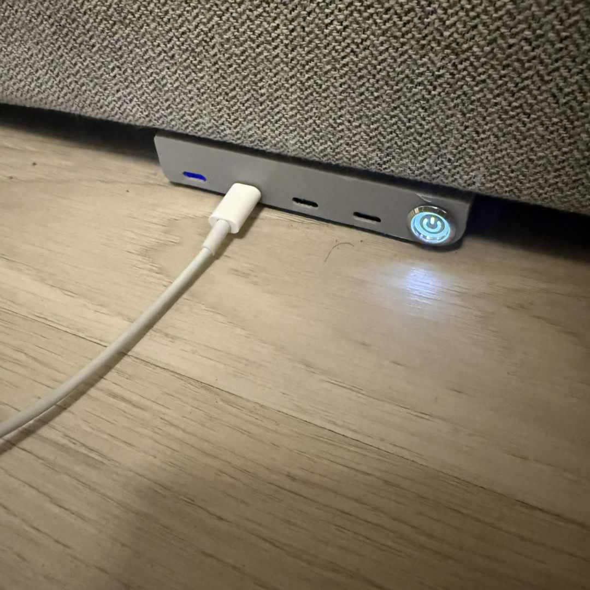
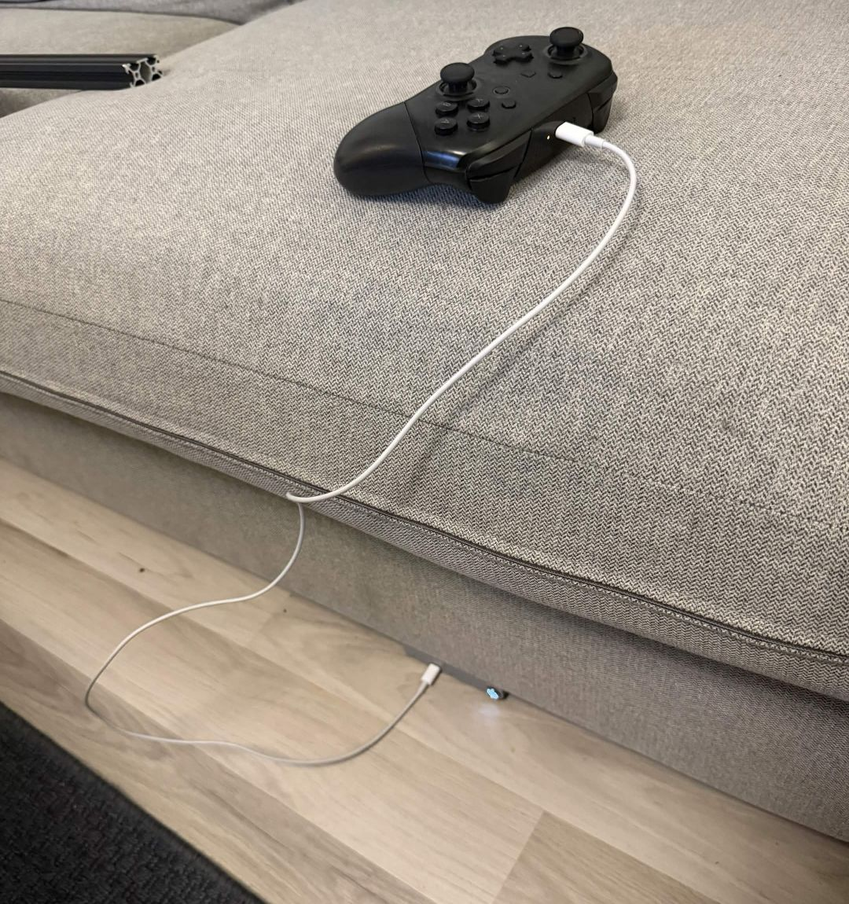

A charging dock built into the couch
When I started my degree I moved into a flat with six other guys. The living room had one problem everyone felt daily: charging a laptop or a gaming device meant trailing a cable all the way across the room to the nearest socket. The fix was to stop fighting the cables and build the charging into the furniture: four USB-C ports wired straight into the couch in a 3D-printed housing, fed from a 24 V DC supply sized so all four can run at full output at once, with one switch to cut the lot.
The build
The housing was modelled in Fusion 360 and 3D-printed, sized to hold the four ports and the switch, and to sit cleanly against the couch frame. You can spin the model around below:
Behind the ports sits a 24 V DC supply feeding all four USB-C outputs. It's sized with enough power budget that every port can deliver its full output at the same time, with no throttling or sharing a single rail when the couch is full of devices charging at once.
The problem
A shared flat means shared furniture and never enough sockets where you actually sit. Seven people charging phones, controllers and laptops from a couple of wall outlets turned the living room into a trip-hazard of cables running across the floor and over the seats. Rather than add yet another extension lead, I put the ports where the devices already were: in the couch itself.


One switch cuts power to all four ports, handy for leaving the flat or just not trickling power into a controller all night.
In use
Day to day it just means you grab a cable and plug in without thinking about where the nearest socket is. The photo below is the usual case: a Switch Pro controller topping up on the cushion, powered from the dock built into the couch beneath it.
